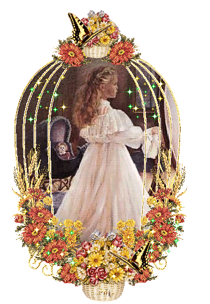
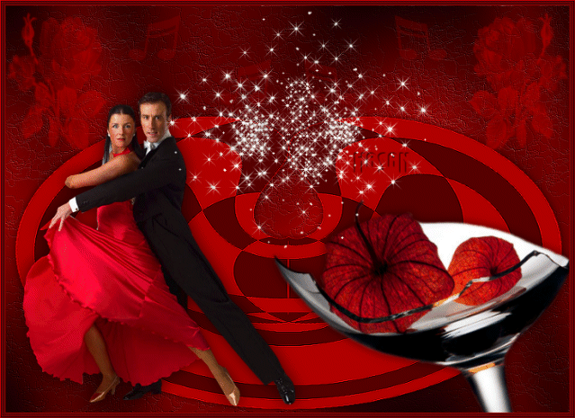
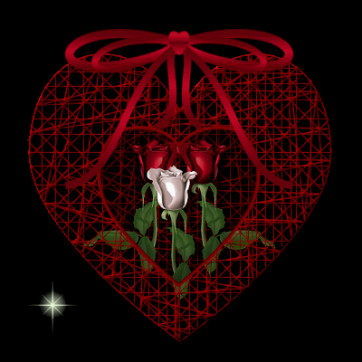
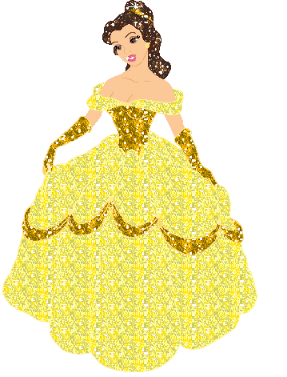
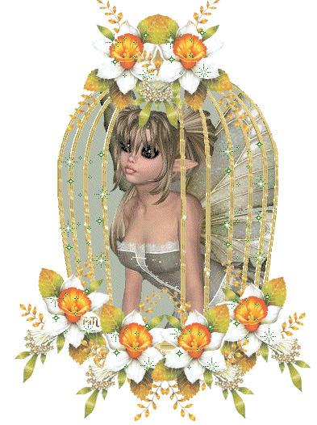
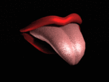
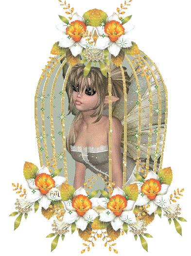
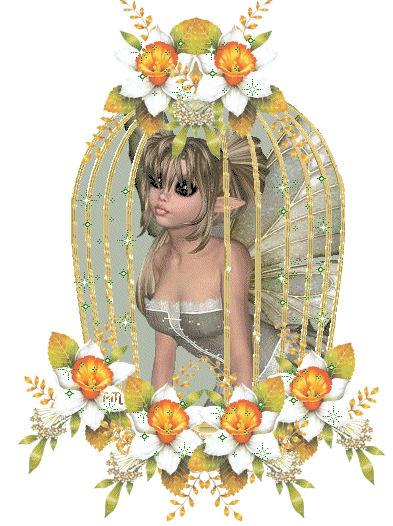
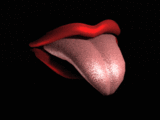
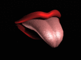

"THE TWENTY-FIRST DAY"
Preparations for that ceremony were started early in the morning; they were of the usual sort but, and I have no idea whether or not it was by a stroke of chance, the inspection uncovered signs of the young bride's misbehavior
Durcet declared he had found shit in her chamber pot; she denied having put it there, asserting that, to cause her to be punished, the duenna had come and done the thing during the night, and that governesses often planted such evidence when they wished to embroil the children in difficulties
Well, she defended herself very eloquently and to no purpose whatever, for she was not carefully heard, and as her little husband-to-be was already on the list, the prospect of correcting both of them was the cause of great amusement
Nevertheless, the young bride and groom, once the mass had been said, were conducted with much pomp to the salon where the ceremony was to be completed before mealtime; they were both of the same age, and the little girl was delivered naked to her husband, who was permitted to do whatever he wanted
Is there any voice so compelling as example's? And where if not in Silling were it possible to receive very bad examples and the most contagious ones? The young man sped like an arrow to its mark, hopped upon his little wife, and as his prick was greatly stiff, although not yet capable of a discharge, he would inevitably have got his spear in her… but mild as would have been the damage done her, the source of all Messieurs' glory lay in preventing anything from harming the tender flower they wished alone to pluck
And so it was the Bishop checked the lad's impetuous career, and profiting from his erection, straightway thrust into his ass the very pretty and already very well-formed engine wherewith Zélamir was about to plumb his young spouse
What a disappointment for that young man, and what a discrepancy between the old Bishop's slack-sprung vent and the strait and tidy cunt of a little thirteen-year-old virgin! But Zélamir was having to deal with people who were deaf to common-sense arguments

Curval laid hands on Colombe and thigh-fucked her from in front while licking her eyes, her mouth, her nostrils, in a word, her entire face
Meanwhile, he must surely have been rendered some kind of service, for he discharged, and Curval was not a man to lose his fuck over silly trifles
""
They dined, the wedded couple appeared at the meal and again in the salon for coffee, which that day was served by the very cream of the subjects, by, I wish to say, Augustine, Zelmire, Adonis, and Zéphyr
Curval wished to stiffen afresh, had absolutely to have some shit, and Augustine shot him as fine an artifact as it were in human power to create
The Duc had himself sucked by Zelmire, Durcet by Colombe, the Bishop by Adonis
"The last named shitted into Durcet's mouth after having dispatched the Bishop"
"But no sign of fuck; it was becoming rare, they had failed to"
exercise any restraint at the outset of the holiday, and as they realized the extreme need of seed they would have toward the end, Messieurs were growing more frugal
"They went next to the auditorium where the majestic Duclos, invited to display her ass before starting, exposed that matchless ensemble most libertinely to the eyes of the assembly, and then began to speak: Here is still another trait of my character, Messieurs, said that sublime woman; after having made you well enough acquainted with it, you will be so kind as to judge what I intend to omit from what I am going to tell you… and you will, I trust, dispense me from having to say more about myself"
Lucile's mother had just fallen into a state of the most wretched poverty, and it was only by the most extraordinary stroke of chance that this charming girl, who had received no news at all of her mother since having fled her house, now learned of her extreme distress: one of our street scouts—hard in pursuit of some young girl for a client who shared the tastes and designs of the Marquis de Mesanges, for a client, that is to say, who was eager to make an outright and final purchase—one of our scouts came in to report to me, as I was lying in bed with Lucile, that she had chanced upon a little fifteen-year-old, without question a maid, extremely pretty, and, she said, closely resembling Mademoiselle Lucile; yes, she went on, they were like two peas in a pod, but this little girl she'd found was in such bedraggled condition that she'd have to be kept and fattened for several days before she'd be fit to market
"And thereupon she gave a description of the aged woman with whom the child had been discovered, and of the frightful indigence wherein that mother lay; from certain traits, details of age and appearance, from all she heard concerning the daughter, Lucile had a secret feeling the persons being discussed might well be her own mother and sister"
She knew she had left home when the latter was still very young, hence it was hard to be sure of the thing, and she asked my permission to go and verify her suspicions
"At this point my infernal mind conceived a little horror; its effect was to set my body afire"
Telling the street scout to leave the room, and being unable to resist the fury raging in my blood, I began by entreating Lucile to frig me
Then, halting halfway through the operation:
"Why do you want to go to see that old woman?" I asked Lucile; "what do you propose to do?"
"Why, but don't you see," said Lucile, whose heart was still undeveloped, "there are certain things that one is expected to do… I ought to help her if I can, and above all if she turns out to be my mother
"
"Idiot," I muttered, thrusting her away from me, "go sacrifice alone to your disgusting popular prejudices, and for not daring to brave them, go lose the most incredibly fine opportunity to irritate
your senses by a horror that would make you discharge for a decade
"
"Bewildered by my words, Lucile stared at me, and I saw I had to explain this philosophy to her, for she apparently had not the vaguest understanding of it"
I therefore did lecture her, I made her comprehend the vileness, the baseness of the ties wherewith they seek to bind us to the author of our days; I demonstrated to her that for having carried us in her womb, instead of deserving some gratitude, a mother merits naught but hate, since 'twas for her pleasure alone and at the risk of exposing us to all the ills and sorrows the world holds in store for us that she brought us into the light, with the sole object of satisfying her brutal lubricity
To this I added roughly everything one might deem helpful in supporting the doctrine which same right-thinking dictates, and which the heart urges when it is not cluttered up with stupidities imbibed in the nursery
"And what matters it to you," I added, "whether that creature be happy or wretched? Does her situation have anything to do with yours? does it affect you? Get rid of those demeaning ties whose absurdity I've just proven to you, and thereby entirely isolating this creature, sundering her utterly from yourself, you will not only recognize that her misfortune must be a matter of indifference to you, but that it might even be exceedingly voluptuous to worsen her plight
For, after all, you do owe her your hatred, that has been made clear, and thus you would be taking your revenge: you would be performing what fools term an evil deed, and you know the immense influence crime exerts upon the senses
And so here are two sources of pleasure in the outrages I'd like to have you inflict upon her: both the sweet delights of vengeance, and those one always tastes whenever one does evil
"
"Whether it was that I employed a greater eloquence in exhorting Lucile than I do in recounting the fact to you now, or whether it was because her already very libertine and very corrupt spirit instantly notified her heart of the voluptuous promise contained in my principles, she tasted them, and I saw her lovely cheeks flush in response to that libertine flame which never fails to appear every time one violates some prohibition, abolishes some restraint"
"All right," she murmured, "what are we to do?"
"Amuse ourselves with her," said I, "and make some money at the same time; as for pleasure, you can be sure to have some if you adopt my principles
And as for the money, the same thing applies, for I can make use of both your old gray-haired mother and your young sister; I'll arrange two different parties which will prove very lucrative
"

Lucile accepts, I frig her the better to excite her to commit the crime, and we turn all our thoughts

to devising plans
Let me first undertake to outline the first of them, since it deserves to be included in the category of passions I have to discuss, although I shall have to alter the exact chronology in order to fit it into the sequence of events, and when I shall have informed you of this first part of my scheme, I shall enlighten you upon the second

"There was a man, well placed in society and exceedingly wealthy, exceedingly influential and having a disorder of the mind which surpasses all that words are able to convey; as I was acquainted with him only as the Comte, you will allow me, however well advised of his full name I may be, simply to designate him by his title"
The Comte was somewhat above thirty-five years of age, and all his passions had reached their maximum strength; he had neither faith nor law, no god and no religion, and was above all else endowed, like yourselves, Messieurs, with an invincible horror of what is called the charitable sentiment; he used to say that to understand this impulse was totally beyond his powers, and that he would not for an instant assent to the notion that one dare outrage Nature to the point of upsetting the order she had imposed when she created different classes of individuals; the very idea of elevating one such class through the bestowing of alms or aid, and thus of overthrowing another, the idea of devoting sums of money, not upon agreeable things which might afford one pleasure, but rather upon these absurd and revolting relief enterprises, all this he considered an insult to his intelligence or a mystery his intelligence could not possibly grasp
Thoroughly instilled, nay, penetrated though he was with these opinions, he reasoned still further; not only did he derive the keenest delight from refusing aid to the needy, but he ameliorated what was already an ecstasy by outrageously persecuting the humble and injured
One of his higher pleasures, for example, consisted in having meticulous searches made of those dark, shadowy regions where starving indigence gnaws whatever crust it has earned by terrible toil, and sprinkles tears upon its meager portion
"He would stiffen at the thought of going abroad not only to enjoy the bitterness of those tears, but even… but even to aggravate their cause and, if 'twere possible, to snatch away the wretched substance that kept the damned yet amongst the living"
"And this taste of his was no whim, no light fantasy, 'twas a fury; he used to say that he knew no more piercing delight, nothing that could more successfully arouse him, inflame his soul, than these excesses I speak of"
Nor was this rage of his, he one day assured me, the fruit of depravation; no, he had been possessed by this mania since his youngest years, and his heart, perpetually toughened against misery's plaintive accents, had never conceived any gentler, milder feelings for it
"As it is of the greatest importance you be familiar with the subject, you must first of all know that the same man had three different passions: the one I am going to relate to you, another, which Martaine will explain to you later when she refers to this same personage, and a third, yet more atrocious, which Desgranges will doubtless reserve for the end of her contribution as doubtless"
one of the most impressive upon her list
But we'll begin with the one on mine
""
Straightway I had informed the Comte of the nest of misery I had discovered for him, of the inhabitants of that nest, he was transported with joy
But it so happened that business intimately connected with his fortune and having an important bearing upon his advancement, which he took much care not to neglect, in that he held them vital to his misconduct, business, I say, was going to occupy his attention for the next two weeks, and as he did not want to let the little girl slip through his fingers, he preferred sacrificing the pleasure the first scene promised him, and to be certain of enjoying the second
And so he ordered me to have the child kidnapped at whatever cost, but without delay, and to have her deposited at the address he indicated to me
"And in order to keep you in suspense no longer, my Lords, that address was Madame Desgranges', for she was the agent who furnished him with material for his third class of secret parties"
And now to return to the objects of all our maneuvering
So far, we had done little but locate Lucile's mother, both to set the stage for the recognition scene between mother and daughter and to study the problems associated with the kidnapping of the little girl
Lucile, well coached in her part, only greeted her mother in order to insult her, to say that it was thanks to her she had been hurled into libertinage, and to these she added a thousand other similarly unkind remarks, which broke the poor woman's heart and ruined the pleasure of rediscovering her daughter
During this first interview, I thought I glimpsed the appropriate way to talk with the woman, and pointed out to her that, having rescued her elder child from an impure existence, I was willing to do as much for the younger one
But the stratagem did not succeed, the poor wretch fell to weeping and said that nothing in the world would induce her to part with the one treasure she had left, that the little girl was her one resource, she herself was old, infirm, that the child cared for her, and that to be deprived of her would be to lose life itself
At this juncture, Messieurs, I must confess, and I do so with shame, that I felt a faint stirring in the depths of my heart; it advised me that my voluptuous pleasure was bound only to be increased by the horrible refinements I was about to give to my meditated crime, and having informed the old lady that shortly thereafter her daughter would come to pay her a visit with a man of great influence, who could perhaps render her great services, we left, and I bent all my efforts to employing the lures and devices I usually relied upon to snare game
"I had carefully examined the little girl, she was worth my going to some trouble: fifteen years of age, a pretty figure, a very lovely skin, and very pretty features"
She arrived three days later, and after having examined every part of her body and found nothing but what was very charming, dimpled, and very neat despite the poor nourishment she had for so long had to put up with, I passed her along to Madame Desgranges: this transaction marked the beginning of our commercial relations
His private affairs attended to, our Comte reappeared; Lucile conducts him to her mother's home, and 'tis at this point begins the scene I wish to describe
The old mother was found in bed, the room was without heat although we were then in the midst of a bitterly cold winter; beside her bed sat a wooden crock containing milk
"The Comte pissed into the crock as soon as he had entered"
To prevent any possible trouble, and in order to feel himself the undisputed master of the fort, the Comte had posted two of his minions, a pair of strapping lads, on the stairway, and they were to offer a stubborn obstacle to any undesirable coming up or going down
""
"My dear old buggress," intoned the Comte, "we have come here with your daughter, you see her there, and a damned pretty whore she is, upon my soul; we have come here, I say, to relieve what ails you, wretched old leper that you are, but before we can help you, you must tell us what's amiss
Well, go on, speak," he said, seating himself and beginning to palpate Lucile's buttocks, "go on, I say, itemize your sufferings
"
"Alas!" said the good woman, "you come with that vixen not to help me but to insult me
"
"Vixen? How's this," said the Comte, "you dare use insults with your daughter? By God," he went on, rising to his feet and dragging the old thing from her litter, "get out of that bed, get down on your knees, and ask to be forgiven for the language you have just employed
"
There was no resist
"And you, Lucile, lift your skirts and have your mother kiss your cheeks, and I am damned certain she wants nothing more than to kiss them, eager as she must be for some kind of reconciliation
"
The insolent Lucile rubs her ass upon the seamed and wrinkled visage of her dear old mother; overwhelming her with a tirade of playful epithets, the Comte permits the poor woman to crawl back into bed, and then resumes the conversation
"I tell you once again," he says, "that if you recite all your troubles to me, I'll take the best care of you
"
The woe-ridden are credulous; and they love to lament
The old woman made them privy to all her sufferings, and complained especially, with great bitterness, of the theft of her daughter; she sharply accused Lucile of having had a hand in it and of knowing where the child presently was, since the lady with whom she had come a little while ago had proposed to take her under her wing; that was the basis for her supposition (and there was considerable logic in the way she argued) that this same lady had taken her away
Meanwhile, the Comte, directly facing Lucile's ass, for by this time he had got her to step out of her skirts, the Comte, I say, now and again
kissing that handsome ass and frigging himself uninterruptedly, listened, put questions to her, requested details, and regulated all the titillations of his perfidious lust according to the old woman's replies
But when she said that the absence of her daughter, thanks to whose work she was procure her wherewithal, was going to lead her gradually but inexorably to the grave, since she had nothing and for four days had been kept barely alive by that small quantity of milk he had just spoiled:
"Why, then, bitch," said the Comte, aiming his prick at the old creature and continuing to explore Lucile's buttocks, "why, then go ahead and croak, you foul old whore, do you suppose the world will be any worse off without you?"
And as he concluded his question he loosed his sperm
"Were that to happen," he observed, "I believe I'd have only one regret, and that would be not having myself hastened the event
"
But there was more to it than that, the Comte was not the sort of a man to be appeased by a mere discharge; Lucile, fully aware of the role she was to play, now that he had been relieved, busied herself preventing the old woman from noticing what he was about, and the Comte, rummaging through every corner of the room, came upon a silver goblet, the last vestige of the material well-being that had once upon a time been this poor wretch's; he put the goblet in his pocket
This fresh outrage having put new hardness into his prick, he again dragged the old woman from her bed, stripped her naked, and bade Lucile frig him upon the matron's withered old frame
Once again nothing could be done to stop him, and the villain darted his fuck over that ancient flesh, redoubled his insults, and said that the poor wretch could rest perfectly assured he was not yet done with her, and that she would soon have news of himself and of her little girl who, he wished to have her know, was in his power
He then proceeded to that last discharge, his transports of lust were ignited by the horrors wherewith his perfidious imagination was already in a ferment, by the ruin of the entire family he was contemplating, and he left
But in order not to have to return to this affair, hear, Messieurs, how I surpassed myself in villainy
Seeing that he might have confidence in me, the Comte informed me of the second scene he was preparing for the benefit of the old woman and her little daughter; he told me he wanted the child brought to him without delay and, as he wanted to reunite the whole family, he wished to have me cede Lucile to him too, for he had been deeply moved by her lovely ass; he made no effort to conceal that his purpose was to ruin Lucile as well as her ass, together with her mother and sister
I loved Lucile
But I loved money even more
He offered me an unheard-of price for these three
creatures, I agreed to everything
Four days later, Lucile, her little sister and her aged mother were brought together; Madame Desgranges will tell you about that meeting
As for your faithful Duclos, she continues and resumes the thread of her story this anecdote has interrupted; indeed, she wonders whether she ought not have recited it at some later time, for, esteeming it a very stirring episode, she considers it would have proven a fitting climax to her contribution
"One moment," said Durcet, "I cannot hear such stories without being affected, their influence upon me would be difficult to describe
"I have been restraining my fuck since the middle of the tale, kindly allow me to unburden myself now"
"""
And he dashed into his closet with Michette, Zélamir, Cupidon, Fanny, Thérèse, and Adelaide; several minutes later his shouts began to ring out, and soon after the uproar started, Adelaide emerged in tears, saying that all this made her very unhappy, and wondering why they had to excite her husband with such dreadful stories; she who told them, Adelaide declared, not others, ought by rights to be the victim
During the interim the Duc and the Bishop had not wasted an instant, but the manner in which they operated belonging to the class of procedures circumstances compel us still to mask from the reader's view, we beg him to suffer the curtain to remain down, and to allow us to move on to the four tales Duclos had yet to relate before bringing this twenty-first meeting of the assembly to a close
"A week after Lucile's departure, I handled a rascal blessed with a rather curious mania"
Warned several days in advance of his intended arrival, I had let a great number of turds accumulate in my one-holed chair, and I had induced one of my young ladies to add a few more to the collection
Our man appeared costumed as a Savoyard rustic; 'twas in the morning, he swept out my room, removed the pot from beneath the chair, and went out to empty it (this emptying, I might note in parentheses, took a considerable length of time); when he returned he showed me how carefully he'd cleaned it out and asked for his payment
"But, and this of course was all stipulated in our prior agreement, instead of giving him a coin, I seize the broom and fall to belaboring him with the handle"
"Your payment, villain?" I cry, "why, here's what you deserve
"""

And I bestow at least a dozen blows upon him
He seeks to escape me, I pursue him, and the libertine, whose critical moment has arrived, discharges all the way down the stairs, bawling out at the top of his voice that they're cracking his skull, that they want to kill him, and that he's got himself into the house of a scoundrel, she's not by any means the honest woman he at first took her for, etc
Another carried, in a small pocket case, a little knotty stick which he kept for an unusual purpose; he wanted me to insert the stick into his urethral canal, and, having plunged it in to a depth of three inches, to rattle it with utmost vigor, and with my other hand to pull back his foreskin and frig his poor device
At the very instant he discharged, one had to pull out the stick, raise one's skirts in front, and he would discharge upon one's mound
Six months later I had to do with an abbot who wanted me to take a burning candle and direct the drops of molten tallow so that they fell upon his penis and balls; it required nothing more than the sensation this ceremony produced to bring about his discharge
His machine required no touching, but it remained limp throughout; before they would yield fuck, his genitals had to be given such a heavy coating of wax that toward the end there was no recognizing this strange object as a part of the human anatomy
That ecclesiastic had a friend who loved nothing so much as to offer his bum to be perforated by a multitude of gold pins, and when thus decorated, his hindquarter far more resembling a pincushion than an ordinary ass, he would sit down, the better to savor the effect he cherished, and, presenting one's very wide-spread buttocks to him, he would twiddle his member and discharge into one's vent
"Durcet," said the Duc, "I should very much like to see that sweet chubby ass of yours studded all over with golden pins, ah yes, I'm persuaded 'twould thus appear more interesting than ever
"
"Your Grace," quoth the financier, "you know that for forty years it has been my glory and my honor to imitate you in all things; I but ask you to have the kindness to set me an example, and you have my word that I will follow it
"""
"God's loin-scum!" exclaimed the good Curval, who had not until now been heard from, "by His sacred seed, I do declare that story about Lucile has made me stiff! I've held my peace, but my head's been at work none the less
Look here," said he, exhibiting his prick standing high, "see whether I do not say true
"I've a furious impatience to hear the denouement of the story of those three buggresses; I have the highest hope they'll meet one another in a common grave"
"
""Softly there, softly," said the Duc, "let's not anticipate events"
Were you not stiff, Monsieur le Président, you'd not be in such a hurry to hear talk of wheels and gibbets
You resemble a great many other of Justice's servitors, whose pricks, they say, rise up every time they pronounce the sentence of death
"
""Never mind the magistrature," Curval replied, "the fact remains that I am enchanted by Duclos'"
doings, that I find her a charming girl, and that her story of the Comte has put me in a dreadful state, and in this state, I say, I could be easily persuaded to go abroad, stop a carriage on the highway, and rob its occupants
"
"Ah, Président, take care," said the Bishop; "keep a hand upon yourself, my dear fellow, else we'll cease to be in safety here
One such slip, and the least we could expect would be the noose for all of us
"
"The noose? Ah, the noose, yes… but not for us
However, I don't for a minute deny I'd myself gladly condemn these young ladies here to be hanged, and especially Madame la Duchesse, who's lying like a cow upon my sofa and who, merely because she's got a spoonful of modified fuck in the womb, fancies no one dares touch her any more
"
"Oh," said Constance, "'tis surely not with you I count upon being respected because of my state
Your loathing for pregnant women is only too notorious
"
"A prodigious loathing, isn't it?" said Curval with a chuckle, "why, indeed it is prodigious
"
And, transported by enthusiasm, he was, I believe, on the verge of committing some sacrilege against that superb belly, when Duclos intervened
""
"Come, Sire, come with me," said she; "since 'tis I who have caused the hurt, I'd like to repair it
"
And together they passed into the secluded boudoir, followed by Augustine, Hébé, Cupidon, and Thérèse
It was not long before the Président's braying resounded through the castle, and despite all Duclos' attentions, little Hébé returned weeping from the hurly-burly; there was even more to it than tears, but we dare not yet disclose just what it was had set her to trembling
A little patience, friend reader, and we shall soon hide nothing from your inquisitive gaze
"And now Curval himself returns, grumbling between his teeth and swearing that all those dratted laws prevent a man from discharging at his ease, etc"
; their Lordships sit down at table
"After supper they withdrew to mete out punishment for the misbehavior that had accrued during the week, but the guilty were not that evening in great number: only Sophie, Colombe, Adelaide, and Zélamir merited correction, and received it"
Durcet, who since the beginning of the evening had waxed very hot, and who had been particularly inspired by Adelaide, granted her no quarter;
"Sophie, whom they had detected shedding tears during the story of the Comte, was punished for that misdemeanor as well as for her former one, and the Duc and Curval, we understand, treated the day's little newlyweds, Zélamir and Colombe, with a severity that almost bordered upon barbarity"

The Duc and Curval, in splendid form and singularly wrought up, said they had no wish to retire, and having had a quantity of beverages fetched in, they passed the night drinking with the four storytellers and Julie, whose libertinage, increasing every day, gave her the air of a very amiable creature who deserved to be ranked among these objects for whom Messieurs had some regard
The following morning, while making his rounds, Durcet found all seven of them dead drunk
The naked girl was discovered lodged between her father and her husband and in a posture which gave evidence of neither virtue nor decency in libertinage; it was plain enough to the financier that (to hold the reader in suspense no longer) they had both enjoyed her simultaneously
Duclos, who, from all appearances, had functioned as an instrument to this crime, lay sprawled near the compact trio, and the others were strewn in a confused heap in the corner opposite the fire, which someone had taken care to keep burning throughout the night

 

 
